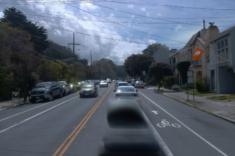
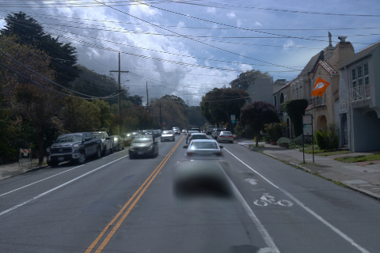
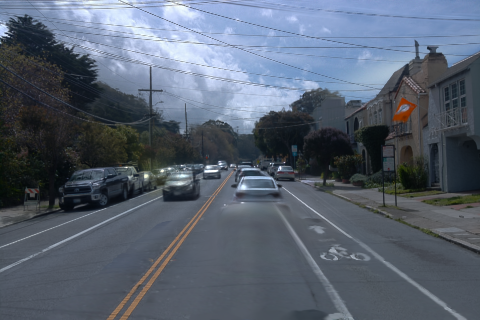
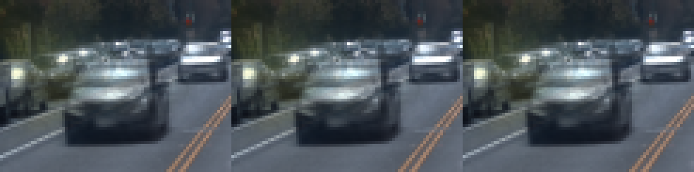
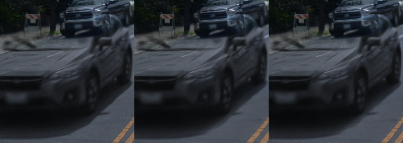
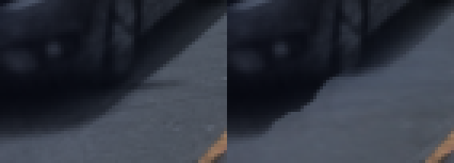
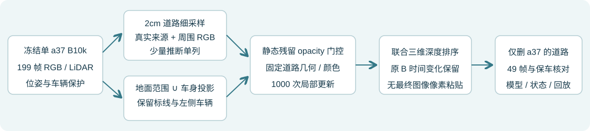

a37 道路修复：补齐红框残留，单独核对左侧车辆
2026-11-03 · 单目标 B10k + 道路修复 R3 · 最终 1000 步 · 原生 480×320 · 49 帧
只修 a37B10k 参数冻结左车与标线独立验收GPU 保持开启
用户标注的 raw113 黑色残留已在当前输出中消退，路面接续恢复。修复使用统一三维道路与静态 opacity 门控，最终 RGB 直接来自联合光栅化。原 B10k 的车体纹理、几何与时间参数不作更新。
左车主体对照基本保持，但并非所有像素严格不变；报告包含最差帧及具体差异。原 B10k 已有的车体模糊仍存在。底部少量无直接观测区域采用邻近沥青推断，可能保留轻微色差；这些样本单列，不计作真实参考。
完整 49 帧
raw113
原单 a37 B10k · 删除后
上一版 · 用户红框对应结果
当前道路修复 R3
均为原生 PNG；未按红框裁切后粘贴回最终图像。三列共用同一帧。输入身份与 B10k 重训记录
红框与左车放大核对
以下三列顺序均为：原 B10k / 上一版 R2 / 当前 R3。只做最近邻放大。

同帧左侧车辆

近处左车与最差差异帧
raw105 左车，三列顺序同上：

raw132 最大差异附近；左为 B10k，右为当前修复。少量边缘像素有较大变化：

全部49帧左车差异记录
播放全 49 帧视频（10fps）
实测结果与分母
| 检查项 | 结果 | 分母 / 含义 |
|---|
| 新 B10k 黑色残留域 | 线性 MAE 0.07680 → 0.00840，下降 89.1% | 346,235 个有效真实参考像素；已观测 BUILD 代理，不是独立无遮挡道路 GT。 |
| 旧固定阴影代理 | 0.07406 → 0.01773 | 同一 20,813 样本；不与此前 B30k / 删五车结果混用。 |
| 双黄线相对原 B 的变化 | 首版 6.764 → 当前 0.226 | 固定 62,938 像素，8bit RGB MAE（0–255）；变化下降 96.7%。 |
| 左侧车辆相对原 B 的变化 | 平均 0.0458 级；99.72% 像素变化 ≤1 级 | 341,671 像素，含左侧被选车辆与其他可见车；并非严格零改动。 |
| 左侧干净路面变化 | 首版 1.351 → 当前 0.580 | 固定 42,062 像素，8bit RGB MAE。 |
| RGB 校准开启 / 关闭 | 外边界带变化 2.966 / 3.420 | 同一门控、同一 43,392 像素，0 次更新；该带含原阴影，不是独立接缝 GT。 |
保留车辆分别核对
| 车辆 | 49帧可见域像素 | 相对 B10k 的8bit平均变化 |
|---|
| a5 | 121,128 | 0.0158 |
| a26 | 116,261 | 0.1168 |
| a18 | 13,107 | 0.0051 |
| a6 | 45,418 | 0.1634 |
保车的参照是原 B10k 的删除输出；没有用未经删车的传感器图像替换车辆。完整统计 · 原生浮点逐帧指标
组件与数据流

这次补掉黑块的关键
上一版只用当前车辆地面框外扩范围限制道路损失，上半车身投影对应的路面落在框外，被错误分配了“保留原图”约束。raw105 黑影中心已有 8 个来源帧，修复权重却为 0、保留权重为 1。现在合并地面范围、a37 车身投影及残留见证，排除其他车辆保护域；该点修复权重为 1、保留权重为 0。
标线以跨帧三维位置保护，保留已有黄线 / 白线纹理；不会把白色车形残留统一当标线保护。颜色自适应只平滑低频校准偏置，不平滑原始道路纹理。最终只优化静态残留透明度门控，新增道路的几何、颜色与 opacity 固定。
| 设置 | 当前值 |
|---|
| 道路颜色采样 | 2cm；在8cm测量父面片内作切平面细分，不代表新增 LiDAR 测量。 |
| 残留核心外过渡 | 纵向 0.7m / 横向 0.45m；处于已有 a37 道路证据域内，不是车辆框总长宽。 |
| 周围 RGB 自适应 | 纵向 σ0.8m / 横向 σ0.4m；每通道线性偏置上限 ±0.025；剔除车辆、标线及残影见证。 |
| 真实 / 推断样本 | 135,733 个细采样点有 ≥3 个颜色一致真实来源；4,699 个为 ≤0.6m 邻近沥青 IDW 推断，拟合权重0.25，独立标记并从真实参考评价中排除。 |
完整设置 · 参考来源与推断记账
保存、恢复、工程重跑与交付
最终方法正式1000步，约81.4秒；真实GPU 32步 smoke，完整参数/Adam/RNG/采样器恢复后两次各1步重放，三锚PNG一致。最终49帧重载相对原生B10k的基线PNG最大8bit差值为 0；原模型文件与张量版本保持不变。
首版标线受影响、第二版修复域漏掉车身投影，均保留现场。三次各1000正式更新 + 96 smoke + 6恢复更新，共3102次新增更新；此前24240，累计27342。没有继续训练 B10k。RGB开关对照为零更新。
最终修复检查点 · 完整恢复核对 · 时间与原模型保持核验 · 回放包清单
同目录 a37_B10k_road_replay.tar.gz 包含最终输入、参数、Adam、RNG、采样器、代码和历史修订证据；回放依赖此前单a37 B10k四件权重、原生CUDA环境与V3坐标元数据。/root/autodl-tmp/drivingeditor_repro/campaign/scene008_a37_only_B10k_road_20261103_r3
全部199帧为BUILD输入，没有独立测试或无车道路GT。门控SGD排除101/113/125三锚，但这些帧仍参与B10k与参考构建，不能视为独立测试。在上述远端目录用新输出名验证：/root/autodl-tmp/envs/drivingeditor/bin/python source/repair37.py --output replay_check --resume formal/checkpoint001000.pt --evaluate（零更新，验证完整恢复、时间保持和49帧渲染）。human_verdict=null，quality_accepted=false。GPU按用户要求保持开启，未使用subagent。